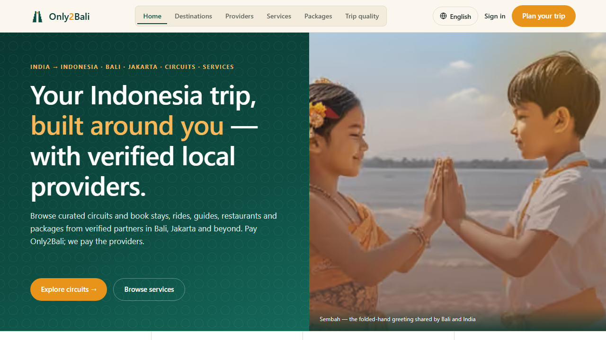
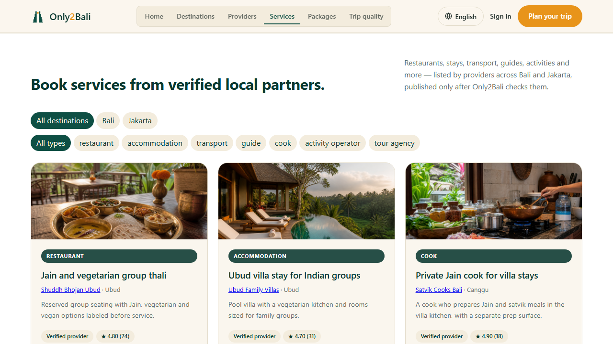
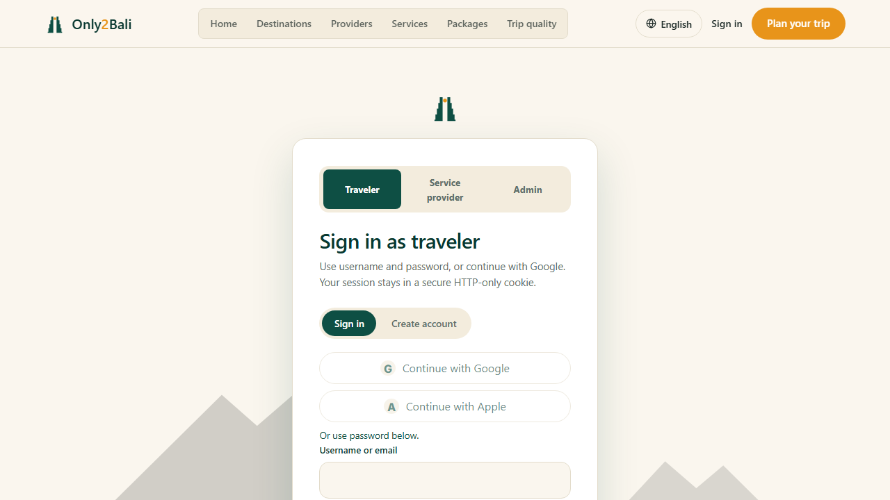

Discover
Browse destinations, services, packages, food and verified providers in one coherent catalogue.
Only2Bali connects Indian travellers with verified local providers, thoughtful itineraries, and a booking flow built around confidence.
Browse destinations, services, packages, food and verified providers in one coherent catalogue.
Use the planner or inquiry path to turn an idea into a group-ready brief.
Sign in, review the offer, pay through Razorpay test checkout and track the booking.



The system is stable for a controlled customer walkthrough: the public routes, provider discovery, login entry, private boundaries and payment surfaces are in place.
Database connected, schema current, Clerk configured, functions co-located with Neon.
Read-only route and safety checks run from one command against production.
Use test payments and a real Clerk test account; gather feedback before opening live money flows.